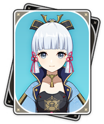

Teams
Decide on One
Main Damage-Dealer
The first step in building a team is to designate a main damage-dealer. For example, I want to use Ayaka as a main damage-dealer.
Pick a Reaction
I would then decide what elemental reaction I want to build the team around. Ayaka, as a cryo user, works well with freeze. Once I know those two things, it's important to add supports to the team.
Supports
Supports can do multiple things to improve a team. I can add a healer to keep the team alive. Support characters can be given supportive artifact sets, such as the Noblesse Oblige set. I can bring supports that will apply specific elements and thus enable the elemental reaction of the team. Some supports are also capable of gathering enemies, making them a valuable addition to the team.
A Cohesive Whole
By building both supports and main damage dealers to cover the weaknesses of the other, you can create a single cohesive team.Each character in the team brings something unique and useful to the table, and that makes a team capable of overcoming any challenge
Artifacts improve both damage and supportive capiblities